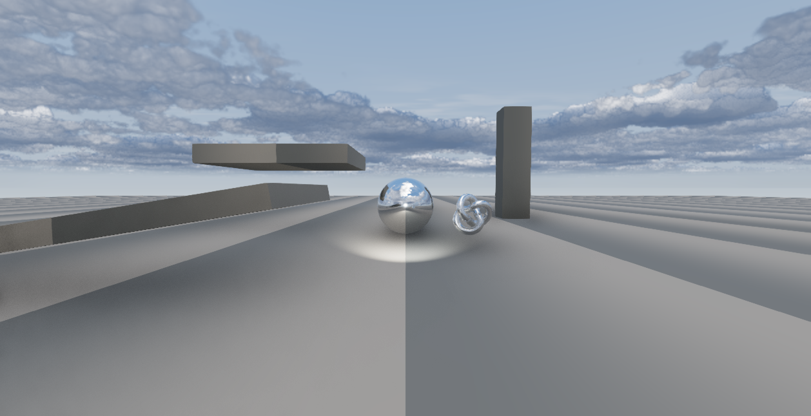
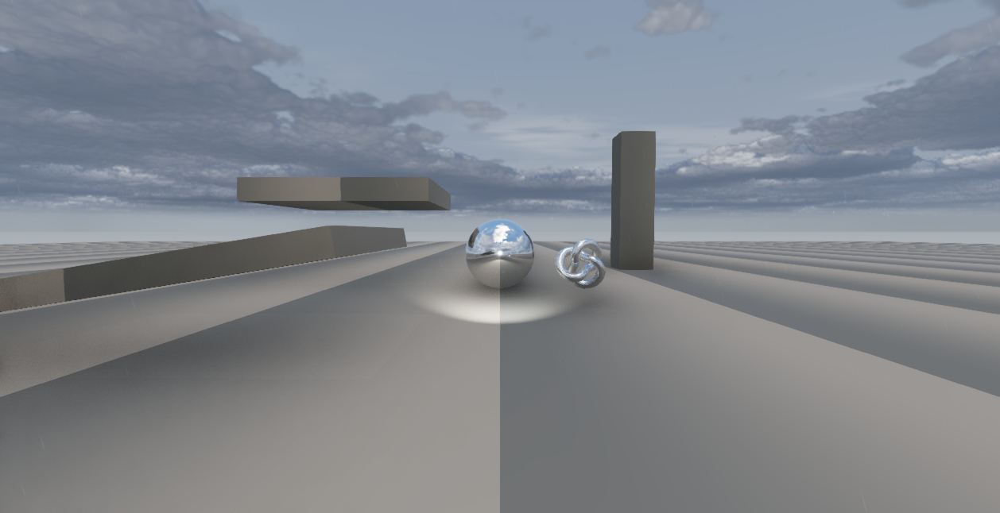
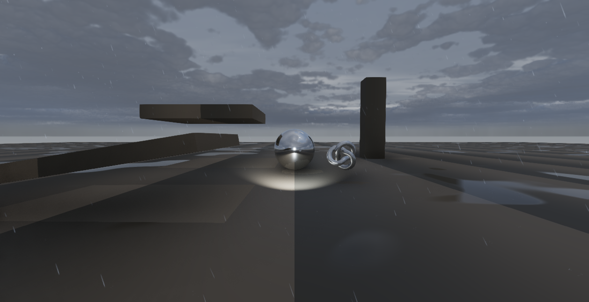
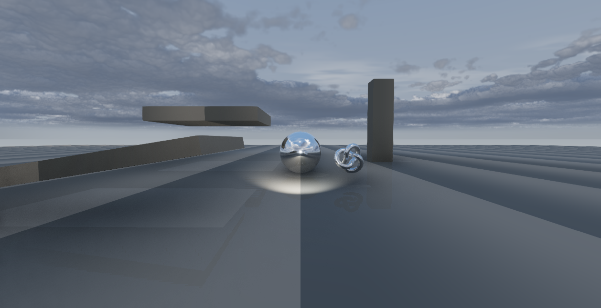
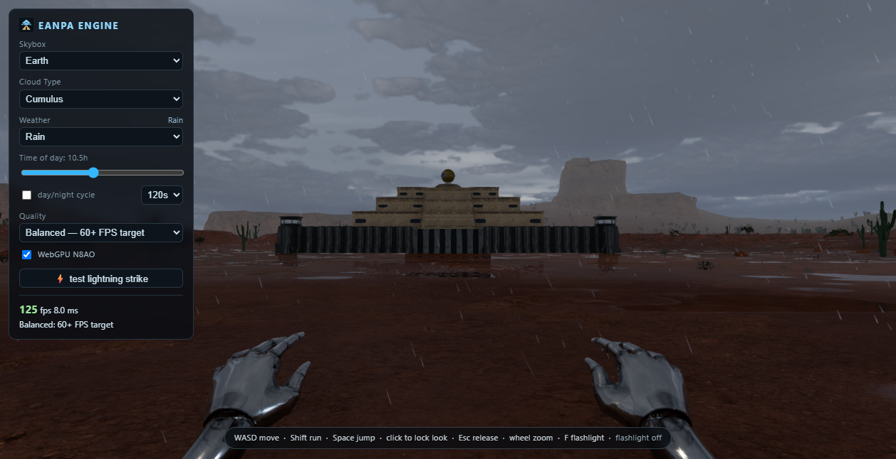

The previous surface response followed the global weather fade, even when the local cloud cell was still dry. Surface water now accumulates from local rainfall and remains in place after that cloud passes.
These are normal-speed, 45-second None-to-Rain transitions using the Balanced Earth sky with generic host geometry. The two runs have different cloud phases, so their arrival times are not a matched timing comparison.



Moisture values are GPU probe averages over a small horizontal receiver near the camera. The probe uses a full cavity mask; visible host geometry uses the normal procedural mask.

The earlier puddle-mask probe returned non-finite values because its diagnostic material lacked the required PBR parameter. Those values are retained as null in the raw baseline and are excluded from conclusions. The corrected probe checks all channels for finite values.

Standalone state: audio context running, all 38 assets loaded, local rain supply 0.7 and no pointer lock. Audio was checked through runtime state; these still captures are not a listening test.
Current transition data · Earlier transition data · GPU accumulation checks · Native GPU pass timings
{kind=link}
{kind=link}
{kind=link}